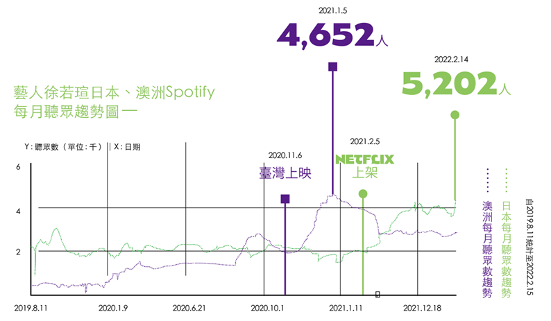

臺灣觀察
臺灣觀察
影視FILM
從影視主題曲流佈初探
臺灣影視目標市場
《孤味》片尾曲〈別人的〉串流Spotify數據表現――

從《孤味》片尾曲〈別人的〉演唱者徐若瑄整體串流與收聽人次數據，以及日本與澳洲每月收聽人次變化，解讀國片華語地區以外潛力市場 。
藝人徐若瑄日本、澳洲Spotify 每月聽眾趨勢圖――

近年國片票房亮眼，票房破億超過五部，不少主題曲、插曲於流行音樂榜名列前茅。由於疫情，各國影院歇業或觀眾不上門，某段時期國片於是多上架國際串流平臺，取代過去的電影賣埠、實體上映，透過線上接觸潛在觀眾的特殊時期播映模式，是否可探查臺灣電影在全球各國於疫情解封後實體落地播映的市場機會?我們將透過電影主題曲與電影受歡迎的相關聯性，和主題曲在各國的受歡迎程度來進行推測。 以下將以Chartmetric 資料庫2來檢視我國電影還能開拓哪些實體上映市場。
過去兩年國片多在國內上映三個月後於國際平臺上架，部分甚至取代外國實體上映。承上假設，以2020年票房最高的《孤味 》片尾曲〈別人的〉來看電影於國際串流 平臺上架後，演唱者在全球受歡迎程度的改變，發現在海外華語市場外，日本每月聽眾數從約兩千名成長至三千五百名左右，澳洲聽眾數也一度成長至四千五百名，即便2021年初聽眾數開始下降，電影於影音串流平臺 全球上架也使片尾曲〈 別人的 〉維持相當聽眾數達十天 。
另像盧廣仲演唱《 刻在我心底的名字 》後澳洲聽眾即遞增，且在電影於串流平臺上架兩個月後聽眾數才減少。由此推估，臺灣電影海外市場現雖以星馬與香港為主，但部分華裔聚集且具影響力的澳洲或北美地區，和素與臺灣交流頻繁的日本，或許是臺灣電影於疫後時期可增加實體上映的潛力市場。
張祐嘉喜歡的事沒有邊際，音樂從古典聽到獨立，文字從小說看到電話簿，唯一不變的眞愛就是感官被衝擊。聯絡方式：joechang@taicca.tw。